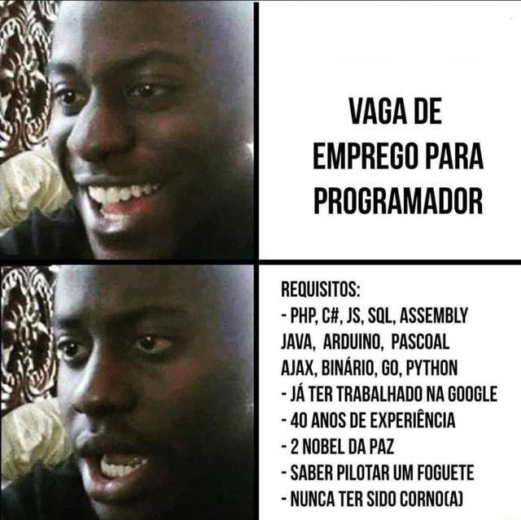

Minha Formação
Atualmente, estudo Análise e Desenvolvimento de Sistemas no Centro Universitário Uninter, que é o meu primeiro curso superior. Estou aprendendo sobre programação, desenvolvimento de software e outras áreas importantes da tecnologia.
Também concluí um curso de Mecânica de Motos e Injeção Eletrônica para motos de até 300cc, onde aprendi técnicas essenciais para reparos e manutenção.

Matérias Concluídas Até o Momento
Lógica de Programação e Algoritmos
Fundamentos de Sistemas de Informação
Fundamentos de Design de Sistemas
Fundamentos de Desenvolvimento de Software
Design de Interação
Análise de Sistemas (em breve)
Ética e Responsabilidade Socioambiental (em breve)
Sinto que preciso me especializar em um curso de inglês, pois percebo a falta dessa língua no meu curso atual